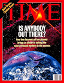
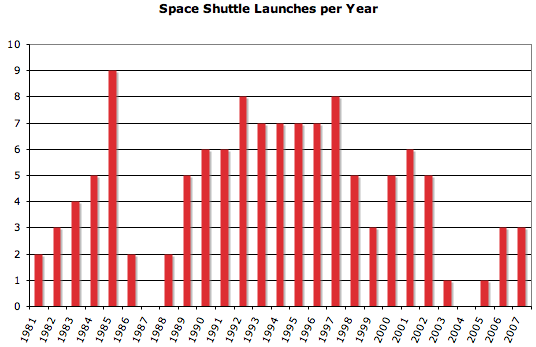

06.28.10
Posted in astronomy, personal, web at 6:45 pm by danvk
If you try searching for [sunrise san francisco] on Google, you’ll see a special display in the results:

This is known as a “onebox”. It’s designed to get you answers quickly. Other examples include the calculator (e.g. [2*2]), weather ([weather 94110]) and time ([time italy]) oneboxes.
The sunrise/sunset onebox is a project that I worked on in my spare time and recently launched. You can read more about it on the Official Google Blog. I first had the idea for this onebox about two years ago, so it’s very gratifying to see it finally launch!
A few features which are worth calling out:
- The sunrise and sunset times are calculated when you perform your query. They are a function of latitude, longitude and the current time. The algorithm is based on the one used by NOAA.
- In most places, you can just search for [sunrise] or [sunset] to get results for your current location. Google figures this out based on your IP.
- This onebox works on mobile phones, too, so you can search for sunset times when you’re out on a hike.
There’s a wrinkle to the sunrise/sunset calculation that non-astronomers don’t typically think about. The sun starts to behave strangely once you get north of the arctic circle or south of the antarctic circle. If you’re north of the arctic circle, then there will be at least one day during the summer when the site never sets. And there will be at least one day during the winter when it never rises. This is truly a special case for the onebox! Here’s what it looks like:

I feel bad for those Barrowans — hopefully they’ll be able to fall asleep sometime in the next 34 days!
Permalink
11.05.09
Posted in astronomy, math at 5:39 pm by danvk
As we approach the winter solstice, the days get shorter and shorter. There’s a common misconception about how quickly this change happens. Most people know that:
- The summer solstice (June 21) is the longest day of the year.
- The winter solstice (December 21) is the shortest day of the year.
- The days get shorter between Summer and Winter.
- The days get longer between Winter and Summer.
Many people take these four pieces of information and assume that the day length changes like this over the course of the year:
(The x-axis is the date. The y-axis is length of the day in hours.)
This is consistent with the four pieces of information, but is incorrect! There aren’t many sharp edges like that in Physics. Reality is much smoother:
The length of the day slowly increases as we approach the summer solstice, then slowly decreases as we leave it. This is great — it means that there are lots of long days in the summer. As we get to the autumnal equinox, the rate of change hits a maximum. The same thing happens around the winter solstice, only in reverse.
The summer solstice is the longest day of the year, but not by much! Here’s some day lengths for San Francisco:
| Date |
Day Length |
Difference |
| Jun 18, 2009 |
14h 46m 45s |
+ 09s |
| Jun 19, 2009 |
14h 46m 51s |
+ 06s |
| Jun 20, 2009 |
14h 46m 54s |
+ 02s |
| Jun 21, 2009 |
14h 46m 54s |
< 1s |
| Jun 22, 2009 |
14h 46m 50s |
− 03s |
| Jun 23, 2009 |
14h 46m 43s |
− 06s |
| Jun 24, 2009 |
14h 46m 33s |
− 10s |
The lengths of the days around the solstice differ by only a few seconds! On the other hand, here are some day lengths around the autumnal equinox (September 22):
| Date |
Day Length |
Difference |
| Sep 19, 2009 |
12h 15m 35s |
− 2m 24s |
| Sep 20, 2009 |
12h 13m 10s |
− 2m 24s |
| Sep 21, 2009 |
12h 10m 46s |
− 2m 24s |
| Sep 22, 2009 |
12h 08m 21s |
− 2m 24s |
| Sep 23, 2009 |
12h 05m 56s |
− 2m 24s |
| Sep 24, 2009 |
12h 03m 32s |
− 2m 24s |
| Sep 25, 2009 |
12h 01m 07s |
− 2m 24s |
The length of each day changes by several minutes in September. Over a single week the day gets a whole 15 minutes shorter!
note: the interactive graphs are dygraphs, a JS library I created. Check it out!
Permalink
01.15.09
Posted in astronomy, science at 11:18 pm by danvk
While I was home over Christmas, my mom asked me to throw out some of the magazines that had piled up in my room over the years. One of those was TIME’s February 1996 cover, “Searching for Other Worlds“. Given the imminent launch of NASA’s Kepler Telescope, it was much more timely than the other headline on the cover: “Dole Drops, Clinton Rises“.
The article is a fascinating read now, almost 13 years after it was written. It’s easy to make long-term predictions, knowing that you’ll probably never get called on them. But after 13 years, I can call every single one of the bold predictions in this article. None of them have panned out.
Here are the highlights:
Everyone wants to be the next to find a distant world. The scientists are eagerly awaiting the results from the Infrared Space Observatory (ISO), a newly orbiting European satellite that can detect the faint heat from distant planets. They’re looking forward to the 1997 installation of a new infrared camera on the Hubble Space Telescope, which could take a picture of at least one of the newly discovered worlds.
The ISO was launched successfully, but it certainly did not detect planets. In fact, it’s not even clear to me that this was ever an explicit goal. It did detect dust rings around stars, and was decommissioned on schedule after just over two years of service.
The infrared camera on the Hubble is referring to NICMOS, the “Near Infrared Camera and Multi-Object Spectrometer”. It’s hard to find much information about this on the web. Here are a few images from NICMOS. They’re pretty, but planets they ain’t.
It’s not clear to me that planet-detection was a goal of NICMOS either. The TIME writer may have been prone to exaggeration.
Most promising of all, they’re buoyed by a newly unveiled NASA initiative, known as the Origins project, that will build a generation of space telescopes to search for new worlds. Says NASA administrator Daniel Goldin: “We are restructuring the agency to focus on our customer, the American people.” And the public excitement about this field, he says, “is beyond belief.
Ah, the Origins project. It’s still on-going, and is going to have its first major launch with Kepler in March. Goldin became the longest-ever serving NASA administrator before leaving in 2001.
More than one astronomical discovery has disappeared on a closer look, though, so Marcy and Butler headed for the telescope, determined either to debunk or verify the Swiss team’s claims. Sure enough, says Marcy, after four nights at Lick and many hours of computer time, “everything they’d said about the planet was confirmed.” (Butler and Marcy did, however, show that hints the Swiss team had found a second planet around the same star [51 Pegasi] were mistaken.)
After two months, they had analyzed 60 of the 120 stars in their survey. On the morning of Dec. 30, Butler went to the office to check on the computer’s progress. “When I saw the data come up, I was completely blown away,” he says. It was the telltale signature of the object orbiting around 70 Virginis. Recalls Butler: “It knocked me off the chair.”
Geoffrey Marcy went on to discover 70 of the first 100 extrasolar planets and the first transiting exoplanet. Paul Butler is a co-discoverer of approximately 2/3 of the known exoplanets.
… Such a gigantic scope is utterly beyond current technology, and beyond anything engineers can imagine for the next century as well. But astronomers know they can simulate a huge telescope by orbiting several smaller ones, widely separated, and combining their light electronically. This multimirror device is known as an interferometer, because rather than gathering light directly, it measures interference patterns created when light waves from several mirrors overlap each other.
Unlike traditional NASA projects, which tend to be expensive and complex, this one is relatively modest. “We really don’t want to start out building the Battlestar Galactica,” says Weiler. Instead he will start with a demonstration model by the turn of the century, a device consisting of four to six mirrors a foot or two across. Even at that size, the interim interferometer should be able to spot objects the size of Neptune around nearby stars.
That must be referring to the Space Interferometry Mission (SIM). Its launch date has been pushed back five times thus far and has had its budget almost entirely slashed. Wikipedia says it will be launched “no sooner than 2015″. The scientists involved in the project have regrouped and created SIM lite, which aims to accomplish most of the science goals of the original SIM at reduced cost. Their site is careful not to speculate about any launch dates.
Finally, by about 2010, NASA hopes to launch what it calls the Planet Finder: an interferometer with five 3-ft.-to-6-ft. mirrors spread over 300 ft., orbiting out by Jupiter, where the solar-system dust begins to thin out. The Planet Finder should allow scientists to identify Earthlike planets, which should show up as pale blue dots in images beamed back to ground controllers, and analyze their atmosphere for signatures of life like ozone, oxygen or carbon dioxide.
This is referring to the Terrestrial Planet Finder (TPF), which has been abandoned entirely. It’s too bad. The knowledge we’d glean from this is much more interesting than whatever it is we’re learning on the International Space Station.
The astronomers who are looking for planets, meanwhile, are sounding downright cocky. Butler says that he and Marcy are “close, real close” to finishing the analysis of their remaining 60 stars and that they would not be surprised to find two or more additional planets popping out of the data–perhaps in a matter of weeks. The pair will soon be heading for the Keck Telescope in Hawaii, the world’s largest, to continue the search with even more powerful equipment. Mayor and Queloz, meanwhile, are back at their telescope in Europe. At the same time, dozens of other groups, using instruments ranging from the high-flying Hubble to relatively small scopes, are stepping up their activities. Predicts Marcy: “We are going to find, between us and the Swiss, 10 more planets in the next two years.” Concurs Butler: “Very shortly, there could be more planets known outside the solar system than inside.” Whether or not they are right, the human race has already moved closer to answering the most enduring question about its true place in the cosmos.
There were six planets discovered in 1996 and one more in 1997. So they weren’t off by much. The count currently stands at 335.
A few lessons to take from this experience:
- Reporters tend to exaggerate.
- When a government official makes bold predictions about a 10-15 year program, don’t believe him.
- Don’t bet on space-based astronomy. Almost all of those 335 planets were discovered from the ground.
- Interests shift over time. Everyone in this article is interested in pictures of planets. Now we’re more interested in simpler goals, like transits.
Permalink
12.11.07
Posted in astronomy, news, sports at 11:01 pm by danvk
There have been two space-related stories of note in the news recently.
The first was that the launch of Space Shuttle Atlantis was delayed until January. The space shuttle has been NASA’s greatest boondoggle in history: its $145 billion cost to date has passed the Apollo program’s inflation-adjusted $135 billion. The worth of the Apollo program is an issue for another time, but at least it had a clear goal which it accomplished. The Space Shuttle has languished into old age. Seriously, does anyone realize how old this program is? Here’s a video from the launch of the first space shuttle, in 1981:
For some context, the commander of this mission was John Young. John Young walked on the moon… on his fourth space flight! Here’s a plot of space shuttle launches over time:

NASA was accelerating launches through the start of 1986, when Challenger was destroyed. The first period represents the hopes and dreams of the shuttle program. Before Challenger, it really might have made space travel routine. The middle segment, from Challenger to Columbia, is the long working life of the shuttle. Expectations were capped, and so were results. The shuttle program should have ended after Columbia. But instead, it gets a third period to die of old age.
Shuttle missions these days primarily service the International Space Station, which exists primarily to give the Space Shuttle somewhere to go. Seriously, try reading the wiki article about the Columbus module being installed on the next shuttle mission and tell me what exactly it does. Hubble Space Telescope maintenance is often pointed to as something worthwhile that the Shuttle does. Fair enough. But how many Hubble’s could we have had for $145 billion?
The second story is genuinely exciting. It comes from the European Space Agency’s CoRoT mission. At $50 million, it’s a featherweight space mission. This telescope was launched last December and has been observing stars for the past year, looking for transits. This week, they reported that “CoRoT is discovering exo-planets at a rate only set by the available resources to follow up the detections”.
This is completely nuts! There are currently 268 known exoplanets. It’s possible that this number will double in the next month as the CoRoT group begins publishing their findings on December 20. Personally, I’d consider that a more significant achievement than anything the Space Shuttle has done in the last 25 years with its $145 billion.
Permalink
10.30.07
Posted in astronomy, personal, science, wikipedia at 11:22 pm by danvk
 Ars Technica has the write up of an experiment performed by two University professors. Instead of assigning an ordinary term paper, they had their students create a new Wikipedia article on some topic pertaining to the course. To summarize the summary, it was a rewarding experience for the students but had some issues. In particular, several of the articles were immediately deleted or merged into other articles. The original PowerPoint is worth skimming if you’re interested.
Ars Technica has the write up of an experiment performed by two University professors. Instead of assigning an ordinary term paper, they had their students create a new Wikipedia article on some topic pertaining to the course. To summarize the summary, it was a rewarding experience for the students but had some issues. In particular, several of the articles were immediately deleted or merged into other articles. The original PowerPoint is worth skimming if you’re interested.
My take: this should absolutely be encouraged. How many term papers ever see the light of day after they’re graded? The paper benefits the student, maybe the professor, but rarely anyone else. Can you imagine how many papers college students have written about Rimbaud’s Drunken Boat? Wikipedia needs you!
I’ve thought about the merits of Wikipedia assignments ever since I started editing back in college. The issue of public exposure wasn’t so important. I’ve had that since I was little. It was mostly the idea of not letting all the research I’d done for a course go to waste. I was so enamored with the idea that I gave it a trial run myself. After writing a term paper on two ancient Greek astronomers in the Fall of 2005, I created articles about their works. It was a good but surprisingly time-consuming experience for me. Putting my work on display for all the world to see forced me to double-check everything I’d written, clarify my reasoning, and introduce explanatory figures and tables. But the finished product was great. Those two articles I wrote are undoubtedly the best online source for their two topics. And they’re unexpectedly deep content for Wikipedia, which is not necessarily known for its coverage of original materials or ancient history.
The main problem with this approach is that Wikipedia may not accept these changes with open arms. The professors made some good points about this in their slides. The Wikipedia way is to start small and rough, and edit your way to a finished product. I did this for my two articles. This is the way papers are written as well, it’s just that the process is less visible. What’s more, it helps to be familiar with Wikipedia culture before making major edits. For the students whose articles were deleted or merged, I’m sure they could have asked whether there articles were appropriate on some talk page or another. For contributors not familiar with Wikipedia’s style, their contributions will be a heaping mass of words in need of copyediting. This would be even more important if the students had been assigned to edit an article, rather than write one from scratch.
All in all, if done well, this use of Wikipedia can be great for both the students and the community. Here’s the money quote from one of the students:
This assignment felt so Real! I had not thought that anything I wrote was worth others reading before, but now I think what I contributed was useful, and I’m glad other people can gain from my research.
Permalink
« Previous entries
Next Page »